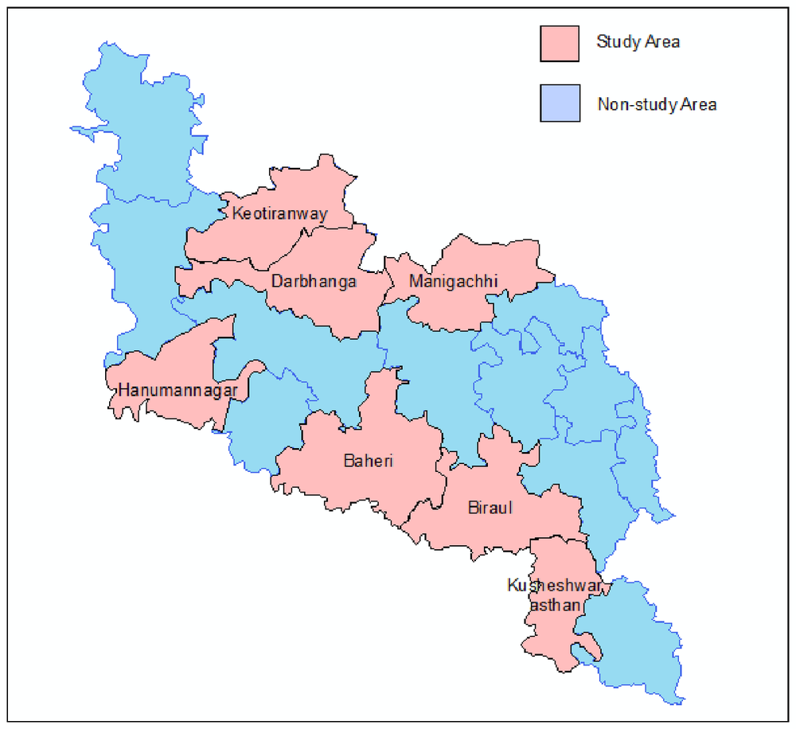

Food Vulnerability during Shocks and Women’s Bargaining Power
When COVID-19 struck rural India, dairy households in which women had more say at home were less likely to be at risk of food poverty. A dairy program that brought women into milk markets raised their say, and the protection ran through that channel.
Can women’s say at home protect families in a crisis?
Programs that link rural households to markets can give women more economic standing. This paper asks whether that extra bargaining power made households more resilient when a large shock, the COVID-19 pandemic, hit everyone at once.
Dairy villages in Darbhanga, Bihar
The National Dairy Plan-I linked small dairy farmers to milk markets through village cooperatives, with a design that encourages women to take part. We surveyed households before the pandemic and again by phone during it.

A money game between husband and wife
Before the pandemic, each spouse was given real cash, equal to one day’s rural wage, and asked in private how much to keep and how much they expected from their partner. Their answers give an index of the wife’s bargaining power relative to her husband’s.
More say for women, lower risk of food poverty
Higher bargaining power for women reduced households’ vulnerability to food poverty during the pandemic. The protection was largest under the bleakest economic scenario.
Without the gender channel, no protection
When the same program is analysed as if it were gender-neutral, ignoring women’s bargaining power, it still raises food spending but has no statistically significant effect on vulnerability to food poverty in any scenario.